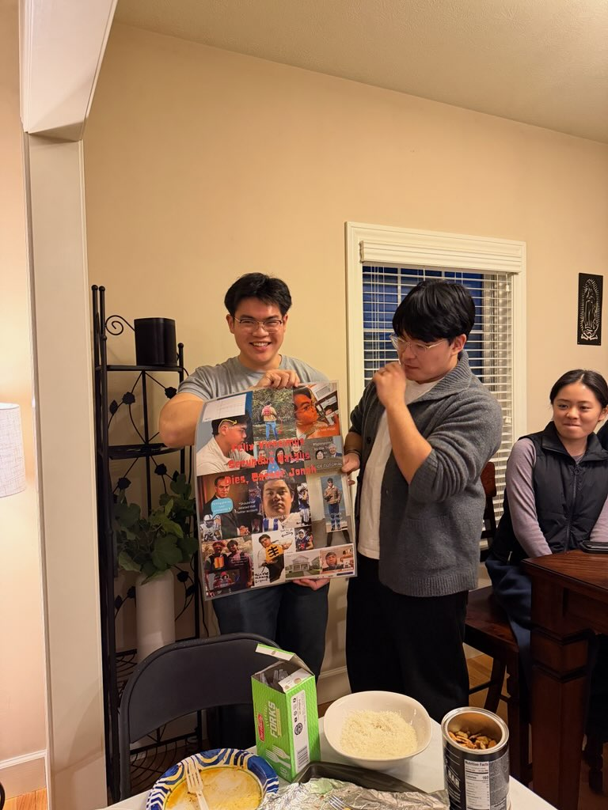
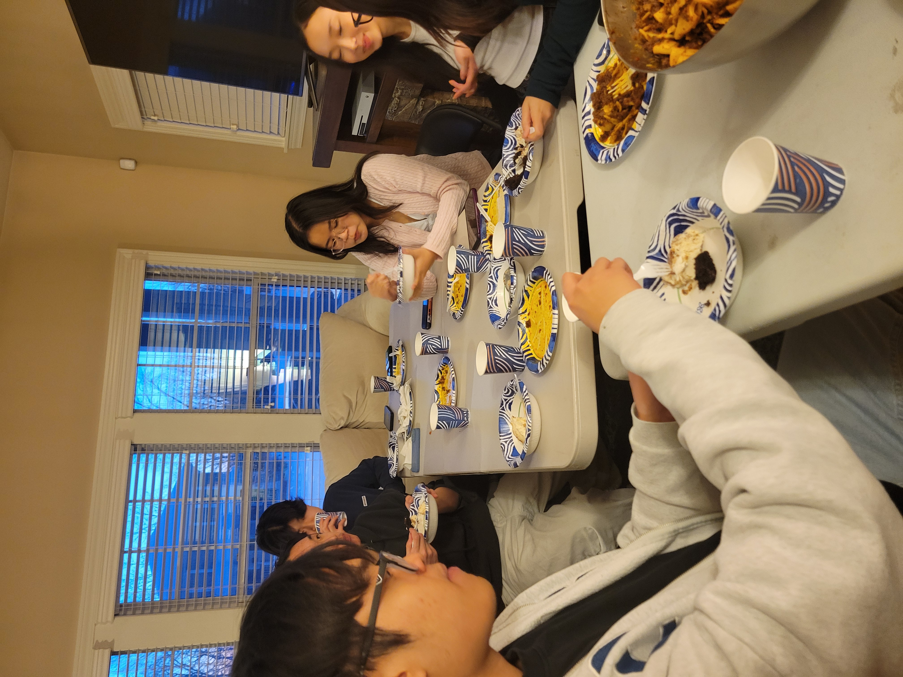

Last weekend, in the palace near the Notre Dame campus, we celebrated the special birthday of Jonah Tran. The grand celebration consists of around 20 culturally and ethnically diverse guests sitting around the plastic tables, enjoying Jonah’s homemade pasta and garlic bread. The house was cozy and full of spirit, akin to a Vietnamese house during Đám Giỗ (Vietnamese death anniversary of a family member).

Ryan graciously gifted Jonah a collage of pictures throughout his highschool and college career.

Jonah Tran, in addition to his numerous achievements, is also a man of satire and wisdom. I observed that the self-proclaimed father-to-many posted an article on the Observer at exactly 12AM on his birthday. There, he reflects on the meaning of birthday celebrations in the true nature of a Classics major. He wrote, “Without human connections and relationships, I am nothing and certainly nothing worth celebrating in isolation,” which is a great quote to put as a caption on an Instagram background. I believe Jonah’s life is a great demonstration of a quote by Al Ghazali, a prominent and influential theologian and mystic. “Knowledge without action is wastefulness, and action without knowledge is foolishness.” Would Jonah be wasteful and foolish if he didn’t have knowledge or action? I guess we would never know.
Thus, a few day ago is a celebration of Jonah Tran. A celebration of the washed-up and old man. A celebration of your connections and relationships. A celebration of your marks on us and on the world.